Design graphique
(10/21)
Synopsis
Deux hommes se retrouvent sans explication dans une petite salle sombre. Ils doivent jouer une partie
d'échecs et
comprennent que quelque chose va arriver au perdant. Alors qu'un des deux hommes a clairement le dessus
sur l'autre
pendant la partie, l'autre panique alors qu'il est sur le point de perdre, renverse le jeu d'échecs et
tente de
s'enfuir, mais finit inévitablement par mourir.
Les planches du générique de "La Partie d'Échecs" avait pour but de représenter l'atmosphère générale du court-métrage. Le film présentait deux jeunes hommes Chaque planche du générique faisait référence à un moment du court métrage tout en étant imprégré de son atmosphère. Les planches ont été fait avec le logiciel Adobe Phtoshop
VidéoLa partie d'échec
Images13 photos
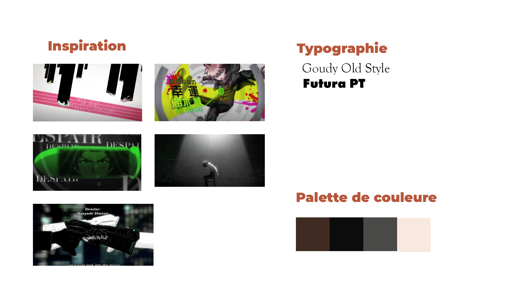
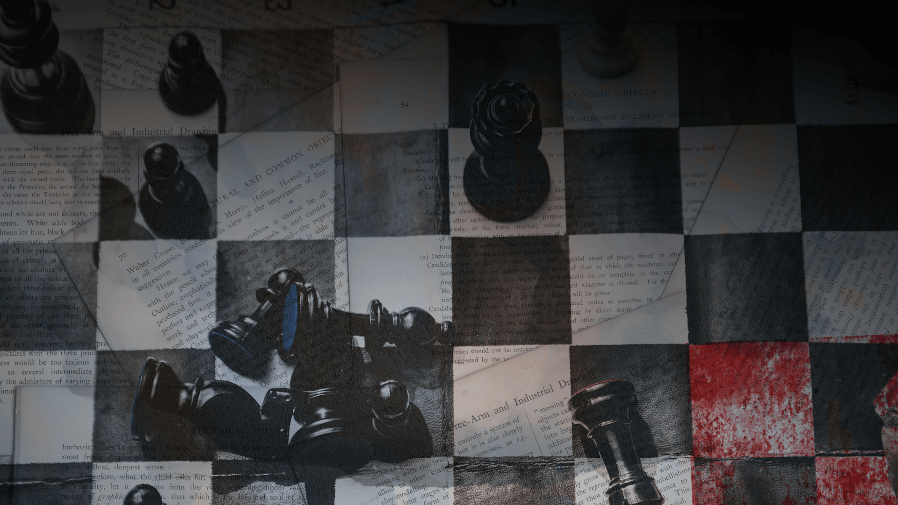
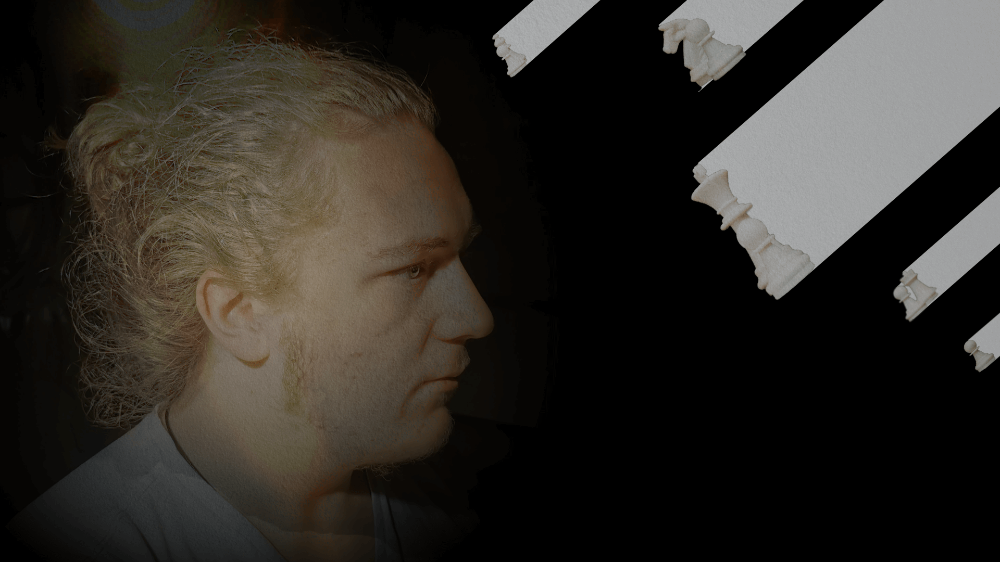
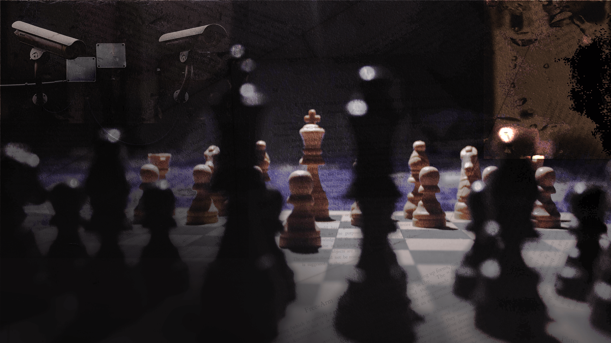
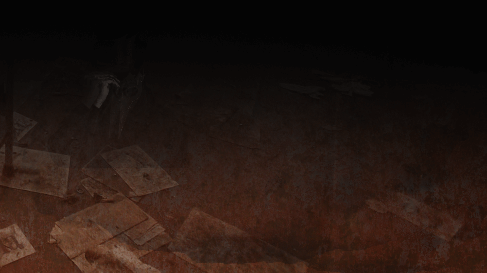
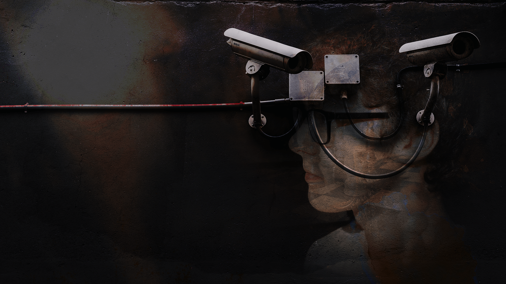
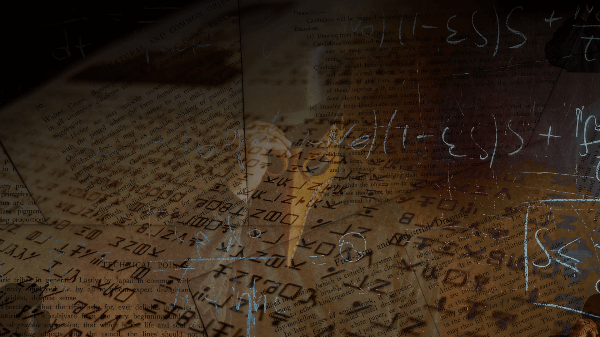
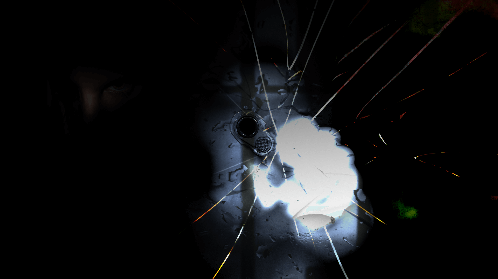
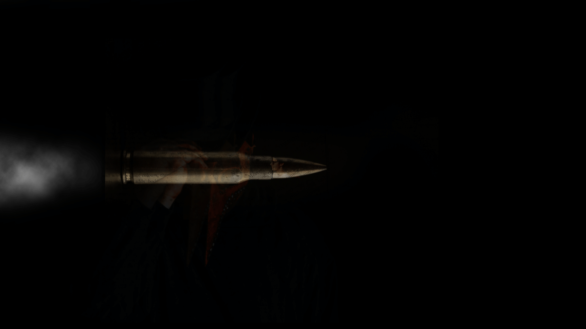
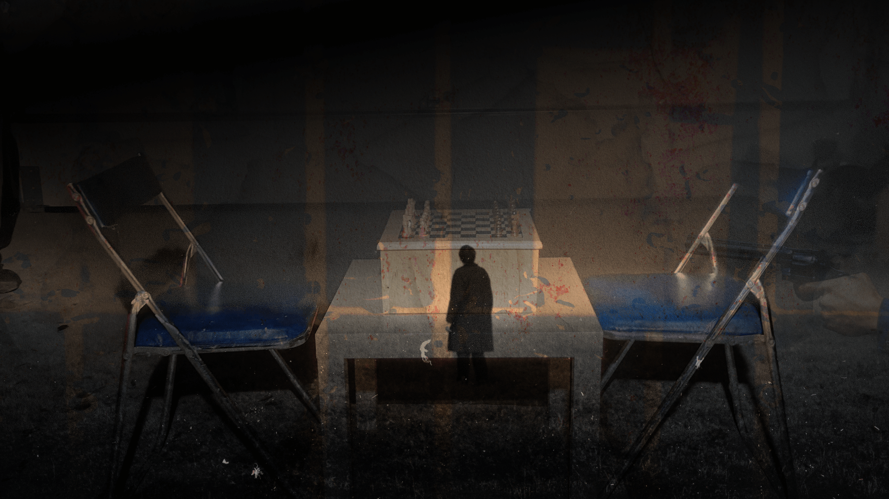
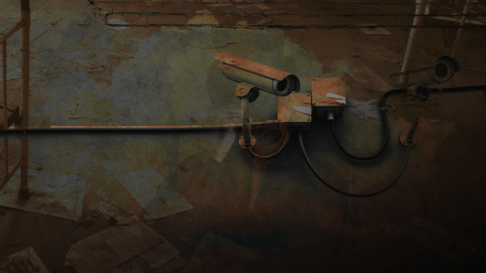
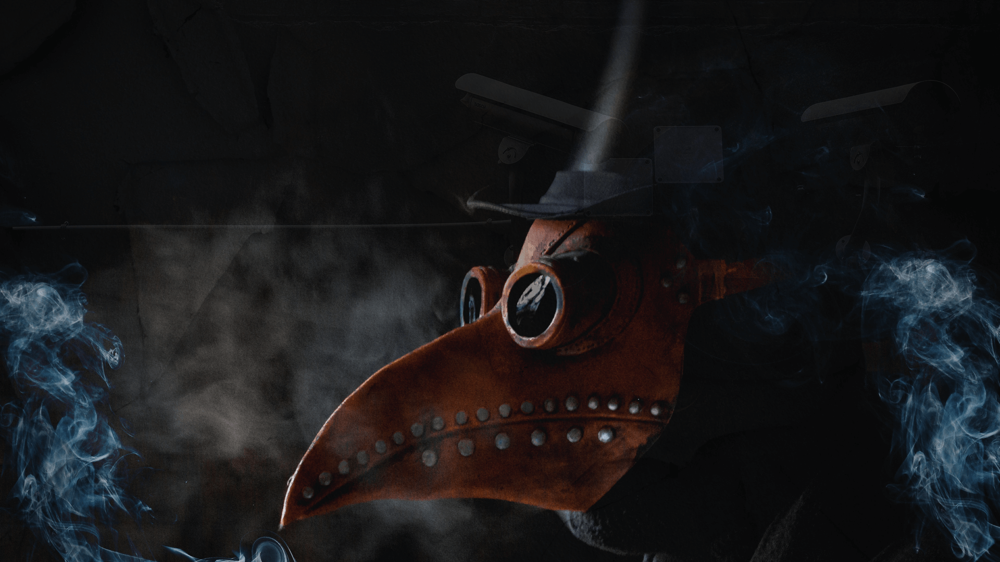
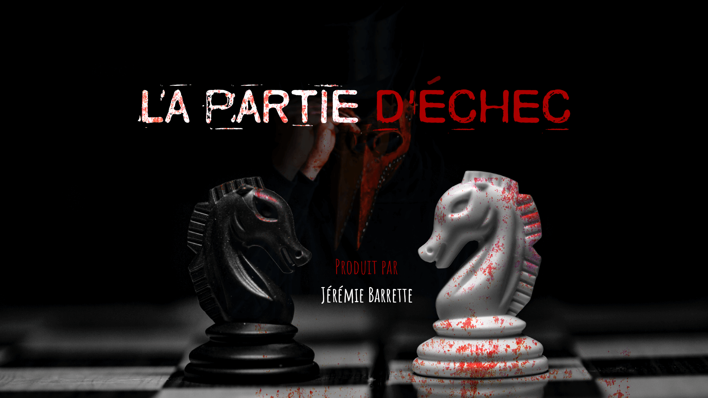
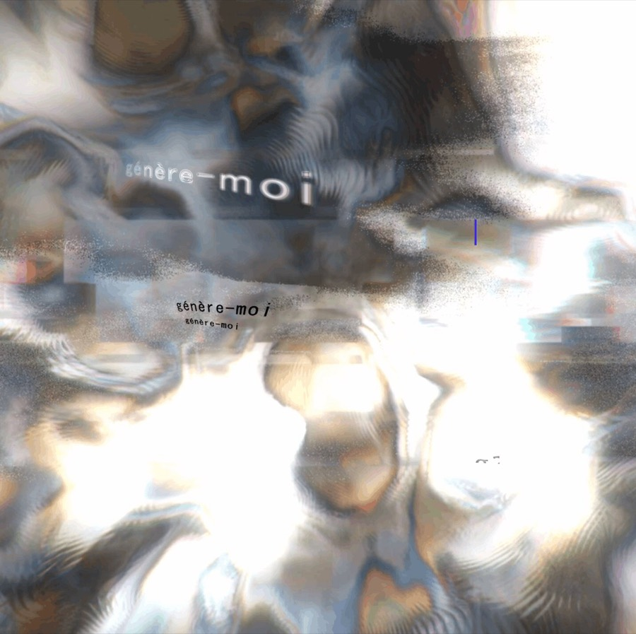